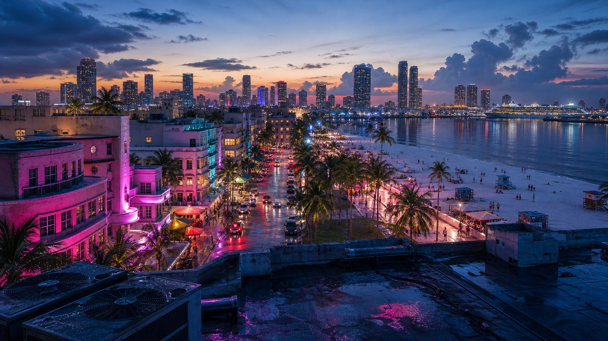
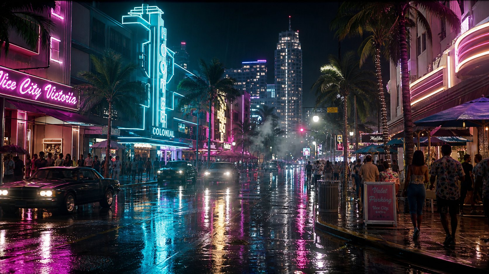

Ocean Beach
Hôtels Art déco aux tons pastel et longues plages de sable blanc : le visage carte-postale annoncé dans la description officielle de Vice City.

RÉGION OFFICIELLE · « EVERYTHING IN EXCESS »
La capitale glamour, affairiste et excessive de Leonida. Un front de mer Art déco, une ville qui s'étire derrière, un marché populaire et un grand port de croisière — les quatre repères urbains que Rockstar a nommés.
Rockstar décrit Vice City comme une ville où glamour, débrouille et avidité se rencontrent. Les textes officiels nomment des lieux différents par leur ambiance et leur fonction; ils ne donnent pas une carte annotée, les limites des quartiers ni un itinéraire complet. La Florida/Miami est une inspiration largement reconnue dans la presse, pas un plan de rues réel à superposer au jeu.

Hôtels Art déco aux tons pastel et longues plages de sable blanc : le visage carte-postale annoncé dans la description officielle de Vice City.
Un quartier au quotidien marqué par ses panaderías. Le nom et cette identité sont publiés par Rockstar; les rues exactes et le périmètre restent à découvrir.
Un marché aux puces où l'on trouve des imitations de grandes marques — l'indice officiel d'une zone commerçante dense et populaire.
Rockstar le surnomme la « capitale mondiale des bateaux de croisière ». Le nom est confirmé; la taille, les terminaux accessibles et les activités restent à vérifier en jeu.
Les trailers et captures officielles montrent des rues, hôtels, routes surélevées, enseignes et scènes portuaires. Un nom lisible sur une enseigne peut confirmer un lieu; il ne suffit pas à fixer une frontière de quartier, une position GPS ou la route la plus rapide.
Les cartes de fans assemblent des captures vidéo, affiches et indices partagés. Le projet GitHub Leonida Atlas v0.8.2 contient 3 431 fiches communautaires au 17/11; c'est une base de travail vivante, pas un recensement Rockstar ni la preuve de 3 431 lieux visitables.